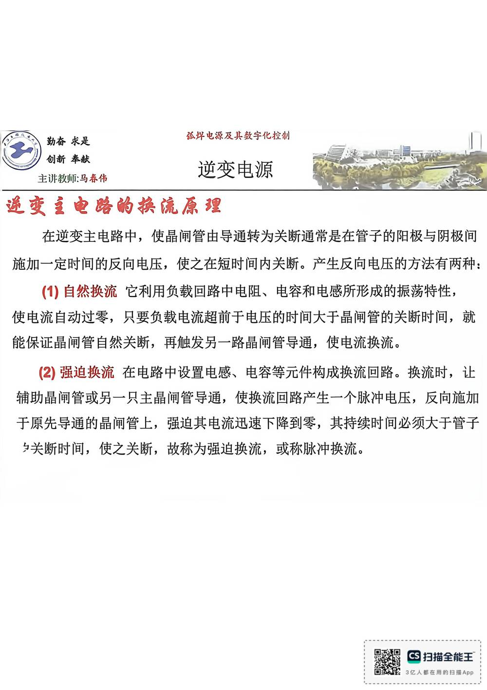

13 手写笔记/6~8周/h-w2-038 手写页 p038
h-w2-038 手写页 p038
📷 原图：
6~8周 焊接电源(差最后一节课)(1).pdf第 38 页（整页扫描，本库内嵌h-w2-038.jpg）
手写页 p038

本页文字（OCR 整理）
- 逆变主电路尚换院原理
- 在逆变主电路中，使晶闸管由导通转为关断通常是在管子的阳极与阴极间
- 施加一定时间的反向电压，使之在短时间内关断。产生反向电压的方法有两种：
- （1）自然换流它利用负载回路中电阻、电容和电感所形成的振荡特性，
- 使电流自动过零，只要负载电流超前于电压的时间大于晶闸管的关断时间，就
- 能保证晶闸管自然关断，再触发另一路晶闸管导通，使电流换流。
- （2）强迫换流在电路中设置电感、电容等元件构成换流回路。换流时，让
- 辅助晶闸管或另一只主晶闸管导通，使换流回路产生一个脉冲电压，反向施加
- 于原先导通的晶闸管上，强迫其电流迅速下降到零，其持续时间必须大于管子
- 乡关断时间，使之关断，故称为强迫换流，或称脉冲换流。
本页重点（自动标记：含"定义/特点/要求/结论/公式"等，或与课件原句高度一致）
- 逆变主电路尚换院原理
- 于原先导通的晶闸管上，强迫其电流迅速下降到零，其持续时间必须大于管子
OCR 说明
文字由 macOS Vision 识别手写体/翻拍页面得到，错字难免（如"弧"误识为"孤"）；重点标记据此推断，请以页图为准。
对应讲义页
关联
- ← 上一页 · 总览 · 下一页 →
- 讲义：00 第4章 电子控制型 导航 · 概念：04 概念地图